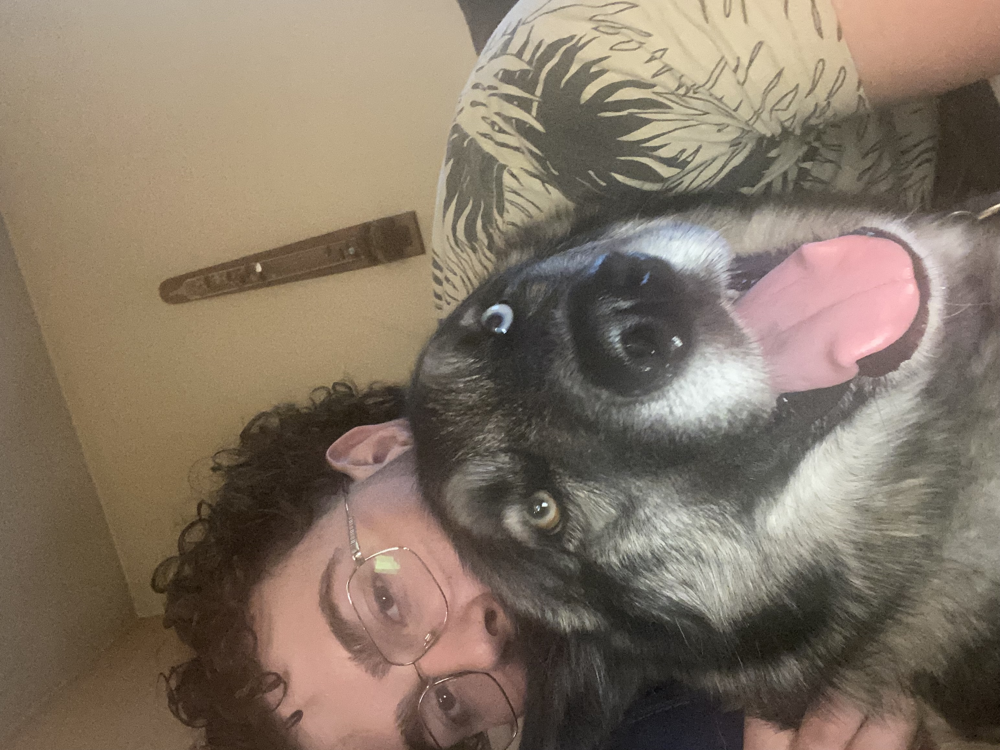

My Bio
Hello! My name is Didier and I was born in Montreal, Canada on Febuary 21, 2000. I moved to Cranston, Rhode Island shortly after in 2002 when my dad was able to land a great job oppurtunity in Boston. Most of my family lives in Montreal so I tend to visit as often as I can, this has made me fluentent in french from being there so much. I am also Syrian as my father was born in Aleppo Syria. This helps explain my french (Didier Ferland) name and my arabic name (Haroun). I am proir Navy and served 3 years before being honorably medically retired by the Navy from the back injury I sustained during my time in service. I did oceanograpghy for the Navy, which exposed me early to working very closly with technolgy on a daily basis. I loved it and knew that working with computers was my dream. Since the day of my discharge, I have been charging to start my path onto becoming a software engineer and that is why I am here now. I was upset about my discharge because I was doing so well in the Navy but I soon started relizing everything happens for a reason and I couldn't be happier to be where I am at today. I can now chase my dream with nothing holding me back!
